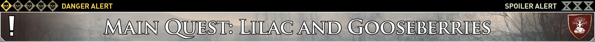
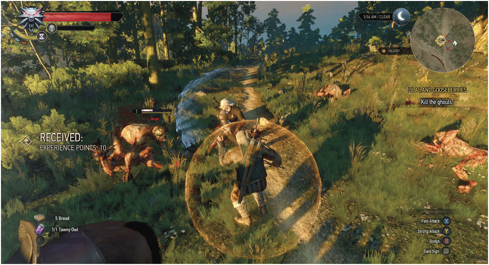
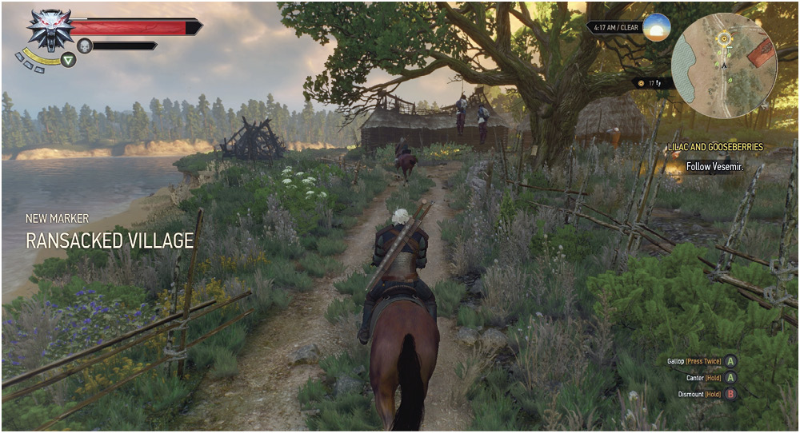

Related Quests : Main Quest: Kaer Morhen ; Main Quest: The Beast of White Orchard
Locations White Orchard , Nilfgaardian Garrison
Characters : Vesemir, Gaunter O’Dim, Nilfgaardian Officer
Enemies : Ghouls, Griffin, Deserters, Peasants, Wolves, Drowners
You wake from your nightmare on the road to Vizima, closing in on the settlement of White Orchard . Vesemir speaks with you. Choose your conversation as you wish. After re-reading a missive from Yennefer, your search for Ciri is interrupted by the foul stench of ghouls infiltrating this hillock. Wipe them out.

Choose Yellow: Quickening the Conversation
Notice the in-game conversation choices marked in yellow? These indicate an important choice if there are multiple yellow utterances to be made. But in the case of one yellow choice, and one or more other choices, the yellow choice moves the conversation along. Usually, the white choices are there simply for lore and flavor, but not all the time! Be sure to follow this guide so you don’t overlook an important choice that isn’t written in yellow!
Nullifying Necrophages
The ghouls you’re slaughtering should pose only a limited threat, as long as you remember to use your silver sword (look to their silver-color health bars as a clue), and push any foes back using Aard, while setting them alight with Igni. Once slain, check your Bestiary to learn more about the horrors you’ve fought, as well as their weaknesses. Or simply check the Bestiary
 After the fracas with the ghouls, inspect the area close to the path that sparkles with a strange glittering light. Obtain the Crystal Skull (evidence of Yennefer you surmise) and mount your faithful steed Roach. Even though you can head off on your own, this isn’t the best time to do so (attempt this shortly).
ITEM : Quest Item (Relic): Crystal Skull
More Than Valuable Baubles: Relics
Though the Crystal Skull isn’t a hugely helpful item, some chests throughout the lands contain much more valuable relics; the most valuable of treasures. Be sure to check the Atlas
Pinned to a Tree: Posters
The tree you made camp at has a poster nailed to its trunk. Though easy to overlook, it’s worth checking any posters you see on trees, or nailed to walls in settlements, since they provide helpful information, and possible indications of activities or quests.
Corpse-Looting, Green Leaf: and Alchemy
Scavenging those you slay yields crowns, weaponry, and alchemic ingredients, so be sure to inspect any corpse you come across. Also look to the minimap, as naturally-occuring ingredients (usually plant-life) also appears in the nearby vicinity, with a green leaf icon. Gather these too. Brewing a potion requires you harvesting from the lands you roam.
All that Glitters…
Important objects you should investigate are always bathed in faint glittering light. Such objects may start Secondary Quests , or be important to an ongoing mission. Many also appear in your Witcher Sense visions, too.
Riding Roach Beyond Reproach
Your faithful steed is always around to help you maneuver through the wilds at a faster speed. As you follow Vesemir, practice the following techniques (which are detailed in Training
Mounting and Dismounting (remember your speed and direction influence how you climb onto and off your horse ).
Cantering and Galloping (increase the speed of your horse to cover distances more quickly, at the expense of quick manuverabiliy and a steady loss of your horse ’s Stamina, except when you’re galloping on a road or path).
Horses and Roads (an often-overlooked method of following a path is to let your horse do the steering automatically).
Calling for Roach (though you won’t need to do this yet, remember you can whistle and Roach appears. This occurs most of the time, and allows you to swiftly mount and ride through more inhospitable locations instead of slogging through on foot).
Follow the winding path, speaking with Vesemir as you pass two new signposts. The latter of which is a Ransacked Village. Evidence of the recent war is everywhere. Follow Vesemir along the river bank, and jump across the ruins of a brick bridge.
A Footnote on signposts and Fast Travel
Signposts are everywhere, and appear on both your minimap and World Map as you discover them. It is usually a good idea to explore the area around a signpost thoroughly for hidden chests, optional quests, ingredients, monsters , collectibles, and other interesting phenomena. Each discovered signpost allows you to Fast Travel from it to any other signpost you may have discovered. This becomes hugely helpful after you venture off the mainland to the Isles of Skellige , and don’t wish to return via small boat in a stormy sea.
You venture across an upturned trader’s cart, a mass of sinewy feathered limbs tearing away at a slain horse . After chasing away the griffin, you speak with the trader whose life you saved. He points you in the direction of White Orchard , and an inn where further information may be obtained.
At this point, you may wish to return to the Ransacked Village, and speak to the villager named Dune who shouts as you pass, pleading for your help. Temporarily leaving Vesemir in order to attempt the White Orchard Secondary Quest: Missing In Action
An Exclamation Proclamation!
Keep an eye open for exclamation marks appearing on your minimap (and World Map) as you explore new areas or return to old ones. These indicate a Secondary Quest is available, usually by speaking to someone.
Bestiary: A Monstrous Compendium
For each entity you meet, whether you slay it or not, an entry to your Bestiary is added. If you slay a foe proficiently, the Bestiary updates, so you always have the most up-to-date hints on defeating foes you may not have faced in a while. Naturally, this guide’s own Bestiary
Afore Ye Go: Freeform Exploration
Once you’ve spoken to the trader the griffin terrorized, Vesemir rides to the tavern in White Orchard , and you are free to either follow him, or spend some time exploring this area more completely. Consult this guide’s Atlas
Collect more ingredients from the lakes, woods, and rolling countryside.
Attack some deserters within the walls of the ruined brick keep adjacent to the Ransacked Village, uncover a chest inside the brick tower, and start the quest Scavenger Hunt: Viper School Gear Viper School gear .
Learn the ways of the World Map; including zooming in and out, and the placement of Waypoints at locations this guide’s Atlas
Investigate the Monster Nests that infest this land; this is a good way to level up, providing you have the skills to survive waves of foes. The nests can only be destroyed with bombs (usually the Dancing Star or Grapeshot); another reason collecting ingredients (and Alchemy ) is important!
Investigate the Places of Power (there are five in this part of the world). Each is guarded by a nasty foe, so you may need to level up and return later, but as each stone grants you an Ability Point, they are exceptionally helpful and must be found!
Complete as many Secondary Quests
Learn about more Secondary Quests by inspecting the Notice Board in White Orchard , as well as in other settlements.
Inspect whetstones at nearby forges across the landscape, where you can repair items damaged by battle.
And of course, learn the advantages of meditation; preparing for combat as well as concocting potions and bombs , waiting to certain times of the day, and obtaining certain bonuses. See Training
The Witcher® is a trademark of CD PROJEKT S. A. The Witcher game © CD PROJEKT S. A. All rights reserved. The Witcher game is based on a novel by Andrzej Sapkowski. All other copyrights and trademarks are the property of their respective owners. Learn more at thewitcher.com.
{kind=link}
{kind=link}
{kind=link}